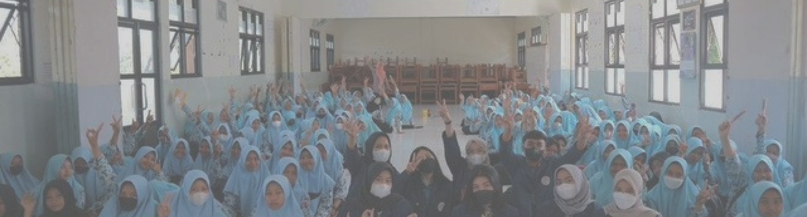

misi smkn 1 sambeng
-
Menghasilkan lulusan yang beriman dan bertaqwa kepada tuhan yang
maha esa
-
menghasilkan lulusan yang profesional, menguasai ilmu pengetahuan,
dan teknologi dalam menghadapi tantangan global
-
menghasilkan lulusan yang terampil dan kompeten sehingga dapat
terserap di dunia usaha dunia industri (DUDI)
-
menghasilkan lulusan yang terampil, kompeten serta memiliki jiwa
wirausaha
-
menghasilkan lulusan yang kreatif, inovatif, kompetitif dan
memiliki daya saing pada tingkat nasional maupun internasional
-
menghasilkan lulusan yang berkarakter dan memiliki akhlak mulia
-
menghasilkan lulusan yang memiliki wawasan dan peduli terhadap
lingkungan